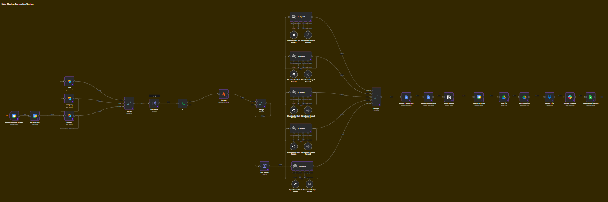

Sales Preparation System
Walk into every sales meeting fully prepared — automatically.

The Problem
Sales teams often enter meetings without enough context about the prospect, leading to generic conversations and missed opportunities.
- Researching every prospect takes 30–60 minutes
- Important information is scattered across multiple sources
- Sales reps ask generic instead of personalized questions
- Preparation quality varies from one meeting to another
Instead of preparing strategically, teams spend valuable time manually gathering information.
Why This Matters
Successful sales conversations begin long before the meeting starts.
The better you understand your prospect, the better questions you ask and the better solutions you can recommend.
This system automatically prepares everything your team needs before every meeting.
How The System Works
- Detects newly scheduled sales meetings automatically
- Researches the company's website and public information
- Uses multiple AI agents to analyze the business
- Identifies potential pain points and automation opportunities
- Generates a complete AI Sales Meeting Brief
- Saves the report to Google Docs or Notion
- Delivers the brief to Slack or Email before the meeting
What's Included In The Sales Brief
- Company overview
- Products and services
- Business model
- Target customers
- Industry insights
- Potential pain points
- Automation opportunities
- Discovery questions
- Objection handling ideas
- Recommended meeting strategy
- Suggested next steps
Use Cases
- Discovery calls
- Sales consultations
- Agency client meetings
- SaaS product demos
- Partnership discussions
- Enterprise prospect research
- Account management meetings
Business Impact
- Save 30–60 minutes of research per meeting
- Better prepared sales conversations
- Consistent meeting preparation across the team
- Higher quality discovery questions
- Reduced manual research effort
- Improved confidence before every sales call
Example: Instead of spending nearly an hour researching every prospect, receive a structured AI-generated meeting brief before the meeting begins.
Preparation often determines the outcome of a sales conversation. This system handles the research automatically so your team can focus on building relationships and closing deals.
Get The System →